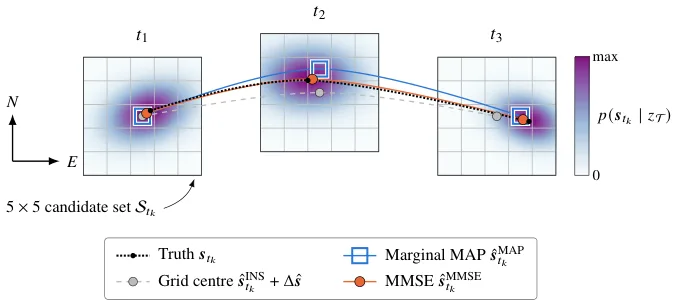
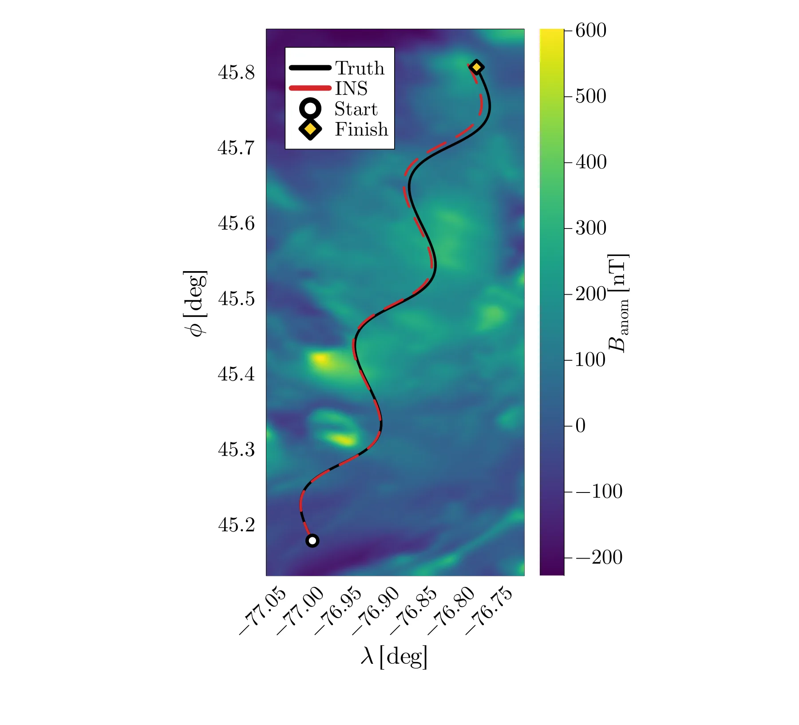
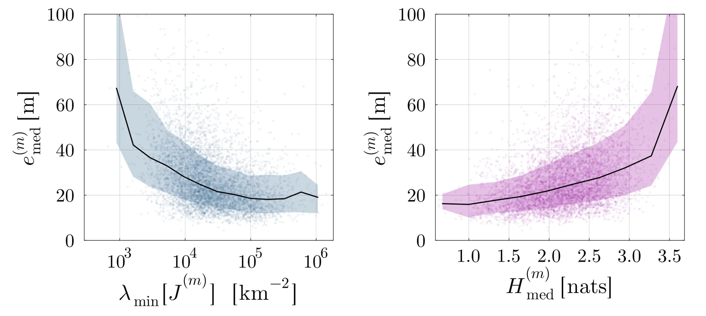
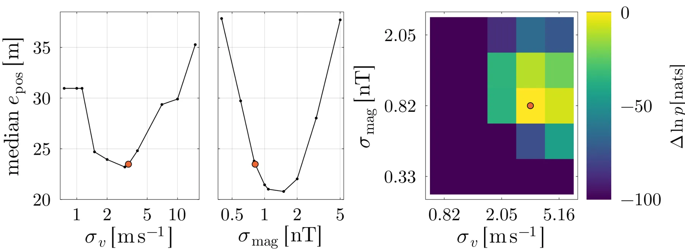

用前向-后向链式因子图做航空磁异常匹配导航：把后验熵当成无需真值的模糊度探针
Forward-Backward Map Matching for Airborne Magnetic Anomaly Navigation
同一个网格、同一套剪枝、同一批测量，只把前向滤波换成前向-后向平滑，中位误差就从 57.7 m 降到 32.8 m（−43%）；再加一个几乎免费的诊断量——后验 Shannon 熵，AUC 0.73/0.78 抓「大误差段」，10% 虚警下检出 26%/47%。代价是全部结果来自合成 INS + 磁测，真实地图与噪声相关性未覆盖。
median position error
entropy flag AUC
pruning speed-up
candidate cells
作者、单位与技术谱系 · Research context
作者与单位
研究脉络
- MagNav 的 EKF 与粒子滤波实现（Canciani & Raquet, 2016/2017）方法基座/对照基线关系：提供磁异常导航的问题定义与两个主流估计器；本文把它们作为基线，并指出 EKF 假定后验单峰高斯、粒子滤波需调参避免退化，二者都是因果滤波、不重访历史估计。[论文 §1 与 §5.3]
- 链式因子图与 sum-product / 前向-后向算法（Kschischang et al. 2001；Loeliger et al. 2004；Rabiner 1989）方法上游关系：本文把一阶 HMM 的链式因子图与经典前向-后向递归直接搬进 MagNav，段化与 active-set 剪枝是在这套机器上做的工程化改造。[论文 §2 与参考文献]
- 本篇推进：把「模糊性」显式化并用熵量化本篇推进关系：相对 Viterbi「只留一条最优路径、丢掉后验不确定性」，本文保留完整离散后验，并把 Shannon 熵作为无需真值的段级模糊度指标；相对 EKF/粒子滤波，它用枚举代替高斯或采样近似，从而能直接暴露多峰。[论文 §1 贡献列表与 §5.4]
合作网络
- 本文 ↔ MagNav.jl（Renfrew_395/555 地图与插值/高度延拓例程）本文仿真与推断流程 → MagNav.jl 开源地图与工具链关系：明确技术依赖（数据与预处理例程来自公开包）[论文 §4.1 与 §5.5]
- Swinburne（Innovative Planet Research Institute）↔ University of Melbourne（School of Physics）↔ RMIT（Department of Physics）Swinburne University of Technology → University of Melbourne / RMIT University关系：共同署名（同一论文的跨机构合作）[论文首页单位列表]
作者、通讯作者与单位取自 arXiv 官方 HTML 首页；「EKF/PF 是基线、因子图与前向-后向是方法上游、熵诊断是本篇推进」均由正文显式表述。原文未给出逐人单位映射（HTML 丢失上标编号），也不涉及导师或师生关系，不做推断；与 MagNav.jl 的依赖关系由正文对地图与例程的引用支持。
方法本质拆解 · What actually changed
是不是微调？
完全不涉及训练。这是一个纯推断算法：没有神经网络、没有可学习参数，唯一的「拟合」是用贝叶斯证据最大化在线估两个噪声尺度 σ_mag 与 σ_v，并对磁测做沿参考路径的多轮去偏。因此它的收益不能归因于数据或容量，只能归因于后验表示方式。
有没有额外约束？
约束是显式建模进因子图的：位置被限制在地图对齐的 101×101 栅格中心（硬量化），转移用 INS 位移加各向同性高斯噪声，测量用磁异常残差的高斯似然，段与段之间用后验 carry-over 连接，剪枝用 log fm ≥ log fm* + log α 的硬阈值。没有额外的平滑正则或运动学约束（如高度、姿态），这也是它在机动变化下会失稳的原因。
推理/后端到底做了什么？
后端是分段的 sum-product：每段先做一次前向扫描得到滤波分布，再做一次后向扫描引入后续测量，得到每步边缘后验；随后取 MMSE（或 MAP/Viterbi）估计并算熵。计算上用 active-set 剪枝把每步转移从 Ns²≈1.04×10⁸ 降到中位 4.5×10⁵（约 230 倍），整体运行时间降 38 倍。它确实重访历史估计（非因果），这是相对 EKF/粒子滤波的核心差别。
方法本质是什么？
本质是把「匹配定位的不确定性」从高斯假设里解放出来，变成一个可枚举的离散后验，再用熵把这个后验压成一个标量。它改变的是后验的表示（离散质量函数 + 双向扫描），从而同时得到两件事：更低的误差（后向扫描带回未来测量，中位 −43%）与一个无需真值的可靠性读数（H/ln Ns）。它没有解决传感器相关噪声、地图误差与机动变化这三类模型失配。
输入 INS 速度/位置、磁异常测量与一张地图；把位置量化到 101×101 栅格后在链式因子图上做分段前向-后向 sum-product（含 active-set 剪枝），输出每步离散后验、MMSE 估计与归一化熵；直接效果是中位误差比前向滤波低 43%，并给出 AUC 0.73–0.78 的模糊度报警。

桥接价值Bridge
桥接价值
我们的整周模糊度固定与多假设关联，本质上也在问「当前后验是不是集中在一个模式上」，而现有判据（ratio、卡方、条件数）都是间接代理。这篇给出一个直接量：离散候选上的归一化 Shannon 熵 H/ln Ns，无需真值即可在线计算，并用 ROC 说明它能抓住「误差超过两个/三个栅格」的段。第二个桥接点是干净对照——网格、剪枝、测量全部相同，只把前向滤波换成前向-后向平滑，中位误差从 57.7 m 掉到 32.8 m，而 EKF 与粒子滤波都紧贴前向 PMF（<0.4 m）。这提醒我们：很多「滤波器选型」的差距其实是「因果 vs 非因果」的差距。
方法与模块Method
方法摘要
把平台位置离散到地图对齐的 101×101 栅格（Ns=10,201，n_half=50），按一阶隐马尔可夫模型建链式因子图：先验因子 f0、测量因子 fm（磁异常残差的高斯似然）、转移因子 fτ（INS 位移 + 各向同性高斯噪声）。整段飞行切成 M=6 个等长段、每段 T=40 步，段内跑 sum-product 前向与后向扫描得到每步边缘后验 γ，再取 MMSE 估计并计算 Shannon 熵 H_t 与归一化熵 H/ln Ns；跨段用后验 carry-over 连接，避免整段回扫。计算上用 active-set 剪枝（保留 log fm ≥ log fm* + log α_prune 的候选），把每步 O(Ns²)≈1.04×10⁸ 次转移降到中位 4.5×10⁵；噪声参数 σ_mag、σ_v 由贝叶斯证据最大化估计，磁测沿参考路径做多轮去偏。
可迁移模块
第一，「离散候选 + 链式前向-后向 + 归一化熵」这套东西只有几十行，可以直接挂到我们的模糊度候选集或数据关联假设集上，输出一个可在线读的集中度指标，而不必等真值。第二，active-set 剪枝规则（残差平方不超过最优候选 2σ²|log α| 的候选才保留）可以直接移植到我们的候选关联，本文实测 α=10⁻² 时运行时间降 38 倍、中位误差只增加 0.09 m。第三，归一化熵 H/ln Ns 让阈值跨网格可比，这解决我们换数据集就要重标阈值的问题；作者还给出剪枝导致的熵偏差曲线，说明「省算力会压低熵」这一副作用必须一起标定。

证据Evidence
关键证据与数字
代表算例（v=68 m/s、h=1000 m、1200 s、n=101、T=40、M=6）：MMSE 中位误差 23.5 m、最大 82.7 m；纯 INS 中位 284.9 m、末段约 1074 m。两组集合（Tables 4）：10³ 次传感器误差实现下，因子图中位 32.8 m vs 仅前向 PMF 57.7 m（−43%），EKF 与 10⁴/10⁵ 粒子滤波与 PMF 相差不到 0.4 m；10³ 条航迹下 23.8 m vs 41.9 m（同样 −43%）。熵诊断（Figure 9，阈值 e_lim=2Δ_cell）：传感器集合 AUC 0.73，10% 虚警时检出 26% 大误差段（κ=3.27 nats，κ/ln Ns=0.35）；航迹集合 AUC 0.78，检出 47%（κ=2.77 nats，κ/ln Ns=0.30）。熵与每步 Fisher 迹的 Spearman ρ=−0.80。剪枝（Figure 10）：α=10⁻² 时运行时间从 281 s 降 38 倍、真实位置最近格被排除的比例 2.9%、中位误差 +0.09 m。
边界与下一步Limits & Next Step
边界与风险
作者明确承认三条：转移因子假设位移噪声各向同性、平稳、帧间独立，而真实 INS 位移残差强相关；测量因子假设残差 iid 高斯，实际混入地图插值误差与平台干扰；栅格量化使 MMSE 与 MAP 估计的中位差达 2.5/3.1 m。我们还要补三条：全部结果是合成数据（同一张 Renfrew_395 图 + 模拟磁测与 INS），真实地形起伏与地图误差只用 Renfrew_555 换图与 50/100 m 高度偏移做了敏感性；飞行速度与横向波形固定，机动改变会直接改变可观测性；剪枝使熵系统性偏低，因此「熵阈值」与「剪枝强度」耦合，跨设置复用阈值需重标。此外 e_lim 以栅格间距定义（2Δ_cell），换地图分辨率后指标含义会变。
下一步实验
第一，把「链式前向-后向 + 归一化熵」接到我们 PPP/INS 的模糊度候选集上：用固定区间平滑替代因果滤波，比较固定率、错误固定率与熵阈值 ROC，重点看「熵低但固定错」的比例。第二，把本文的剪枝规则搬到候选关联，量测加速比与漏检率，并复现它的副作用（剪枝压低熵）以便阈值一起标定。第三，做本文没做的那一步——把熵从「诊断」变成「动作」：熵高时触发多假设保留或请求额外观测（例如降高度/改航向），看能否把大误差段的比例压下来，而不是只报警。



